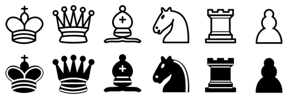

Simple chess engine written in TypeScript. For now, there is no AI. Both sides are human-controlled.
This is simply my way of figuring out chess for TypeScript, it's not intended to be redistributable. If you want a library that is redistributable to build your own chess game, use the official Chessboard.js. If you want to see what this thing can do because you're curious, poke away.
